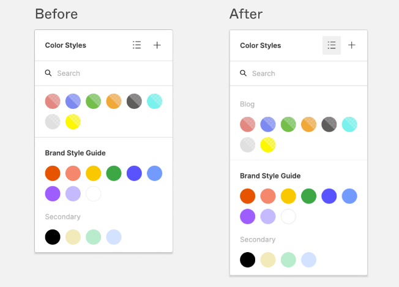

Hi. I'm Mohammad Al-Robaie.
And this is my portfolio, an interactive place to learn more about my background!
Learn about what I do
And this is my portfolio, an interactive place to learn more about my background!
Learn about what I doOdio turpis amet sed consequat eget posuere consequat.
Ornare nulla proin odio consequat sapien vestibulum ipsum primis sed amet consequat lorem dolore.
Ornare nulla proin odio consequat sapien vestibulum ipsum primis sed amet consequat lorem dolore.
Ornare nulla proin odio consequat sapien vestibulum ipsum primis sed amet consequat lorem dolore.
Proin odio consequat sapien vestibulum consequat lorem dolore feugiat.

Ornare nulla proin odio consequat.

Ornare nulla proin odio consequat.

Ornare nulla proin odio consequat.

Ornare nulla proin odio consequat.

Ornare nulla proin odio consequat.

Ornare nulla proin odio consequat.
Stay updated with my thoughts and insights.

#WordJournal Section: "The Seven Stages of Action" Word: Sequencing I chose "Sequencing" because this section highlights the importance of breaking down actions into a sequence of stages. This concept is vital for my career in user experience design as it reminds me to design with a clear understanding of how users move through different stages when interacting with a product. Effective sequencing helps create intuitive designs, improving user experiences and satisfaction.
#ApproximateAnalogy The concept of "Balancing Priorities" in design is analagous to a chef preparing a multi-course fancy meal. Just as a successful dish requires the chef to harmonize various ingredients, textures, and flavors, the design process necessitates the careful blending of different priorities and disciplines. This concept is vital in my career in project management and product development. It values the significance of collaborating effectively with cross-functional teams and balancing diverse perspectives, priorities, as well as constraints, in order to achieve a successful project. Just as a chef ensures each course complements the others, I must facilitate collaboration among team members to align usability, cost-effectiveness, reliability, manufacturability, and customer satisfaction while meeting business goals.
#ApproximateAnalogy Clear page structure in web design is similar to organizing a well-equipped kitchen for efficient cooking. Just as a chef arranges kitchen tools/utensils, ingredients, and workspaces logically, web designers structure web pages for effortless user navigation. This reduces cognitive load, streamlining the user experience and ensuring quick access to information. This analogy emphasizes the importance of information architecture and user-friendly design in web development and UI/UX careers, highlighting the need for intuitive, engaging websites. Hence, as a software engineer involved in designing front-end applications, this concept is vital for my career.
#WordJournal Word: Contrast I chose the word "Contrast" because it emphasizes the importance of creating visual differences among design elements. In my career, whether I'm crafting presentations, designing marketing materials, or developing user interfaces, creating contrast is crucial. It's a reminder that subtle differences can go unnoticed, and it's the distinct contrasts that capture attention and guide the viewer's focus. By using contrast effectively, I can ensure that key information stands out, making my work more engaging, memorable, and impactful. This concept serves as a constant reminder to avoid uniformity and to leverage contrast as a powerful tool in my career as a UI/UX designer.

#WordJournal Word: Harmony Color harmony is a fundamental concept highlighted in this reading. It's important for me to remember this concept in my career because it emphasizes the significance of creating visually pleasing and emotionally resonant color combinations. In various fields like graphic design, marketing, and even user experience design, understanding how colors work together to convey messages, evoke emotions, and establish brand identities is essential. Achieving harmony in color choices can greatly impact the success of a project or design, making it appealing to the target audience and effectively communicating the intended message. Whether I'm choosing colors for a logo, a website, or a product, the concept of color harmony will guide my decisions to create compelling and impactful visual experiences.
#WordJournal Word: Complementary Complementary color schemes are essential in the realm of color design. This concept is crucial for me to remember in my career because it highlights the power of using colors that are opposites on the color wheel to create striking visual effects. Complementary colors enhance each other's intensity and can be used to grab attention, convey emotions, and make designs more dynamic. Understanding and effectively applying complementary color relationships can significantly impact the effectiveness and aesthetics of my design work, whether it's in graphic design, marketing, or any other creative field.
#WordJournal Word: Clarity I chose the word "Clarity" to summarize the section discussing the importance of page names. This concept is crucial because it emphasizes the significance of clear and concise page names that match users' expectations as they click on a link. In my career, as I'm designing websites and creating user interfaces, maintaining clarity to communicate my work is vital. Users should immediately understand where they are on a website and what to expect on a page. Clear page names enhance user experience, reduce confusion, and contribute to overall usability, making it easier for users to navigate and find relevant information.This will help me create effective and user-friendly digital experiences, which is essential for user satisfaction.
#ApproximateAnalogy Design systems are to websites as LEGO bricks are to architectural structures. Just as LEGO bricks provide a standardized and modular building block for constructing various structures, design systems offer a consistent and modular framework for creating websites, ensuring flexibility and reusability. This analogy highlights the importance of design systems in maintaining design consistency, streamlining development, and ensuring a cohesive user experience in web development. It shows the value of systematic thinking and standardized components when it comes to convenience and quality.
The color scheme is predominantly minimalist in white, gray, and black and a light red to yellow gradient for story rings, with subtle accents of blue and pink. This scheme conveys a modern and sophisticated personality, allowing visual content to take center stage. The touches of color are minimalists and calming, aiming to make users feel comfortable, relaxed, and inspired while engaging with the platform.

I changed the story rings and the notification color to blue, which is a color that typically shows formality and trustworthiness. I kept the minimal colors the same to see how the minimal look compares to the next few designs

Here, I swapped the dark and light colors to see the effect of changing the contrast. I used a light purple instead of the white background because it's a youthful color that emphasizes creativity and it's just dark enough to replace the original white.
Here I took the trustworthy blue to a different level. I decided to make the entire UI background blue, and I chose a lighter shade to still complement the other dark icons and logos on the page which I kept black. This color combo lets off a modern vibe that inspires creativity and showcases trust while omitting some of the formality of a darker blue.

In Figma, creating color swatch components is an essential step in building a design system.
These components allow you to organize and document your color palette effectively, making it
easy to maintain consistency throughout your design projects. Here's how to create color swatch
components step by step:
Step 1: Open Your Figma Project
Ensure you have your design project open in Figma, or create a new one if needed. This tutorial
assumes you've already set up some colors that you want to organize into swatch components.

Step 2: Select the Colors You Want to Include
In your Figma project, select the shapes, text, or elements that represent the colors you want
to turn into swatch components. You can do this by clicking on each color individually while
holding down the Shift key to select multiple colors.
Step 3: Create Components
With your colors selected, right-click on one of them, and from the context menu, choose "Create
Component." Alternatively, you can use the keyboard shortcut `Ctrl` + `Alt` + `K` (Windows) or
`Cmd` + `Option` + `K` (Mac).
Step 4: Name Your Component
A dialog box will appear for naming your component. Give it a descriptive name that represents
the color, such as "Primary Blue" or "Accent Red." This name will help you identify the color
easily in the future.
Step 5: Add the Component to a Frame
After naming your component, you'll notice it in the Assets panel on the left side of the Figma
interface. Click and drag the color swatch component into a frame or section dedicated to
organizing your color palette. This frame will serve as your color palette reference.
Step 6: Duplicate and Arrange Swatches
To create additional swatches, duplicate the color swatch component you just created by
right-clicking on it in the Assets panel and selecting "Duplicate." You can create as many
swatches as you need for your color palette.
Arrange the swatches within the frame to visualize your color palette effectively. You can use
grid or alignment tools to maintain consistency.

Step 7: Edit and Update Swatches
Whenever you need to update a color in your palette, double-click on the color swatch component
in the Assets panel. Make your color adjustments, and these changes will automatically reflect
wherever you've used that color in your design.
Step 8: Apply Swatches to Your Designs
To use the color swatch components in your designs, simply drag and drop them onto shapes or
text elements. This ensures that your design remains consistent, and any updates to the color
palette are applied globally.
Step 9: Share Your Design System
If you're working on a collaborative project, be sure to share your design system with your team
by publishing the components and styles. This ensures everyone is using the same colors and
maintains design consistency.
By following these steps, you can easily create and manage color swatch components in Figma,
helping you maintain a cohesive and organized color palette within your design system.
#Freeform
In the bustling realm of web design, there exists a seemingly small but mighty element known as
a tagline. These succinct phrases, often found alongside a website's name, carry a profound
significance. In a world of short attention spans, they serve as powerful messengers, offering a
quick glimpse into what a website is all about. Whether it's Nike's iconic "Just Do It" or
Apple's "Think Different," these taglines hold the magic of instant recognition, forging strong
connections between users and brands.
But taglines are not just about brevity; they are about conveying value. They whisper promises
of benefits, answering the question, "What's in it for me?" A well-crafted tagline isn't merely
a description; it's a badge of distinction. In a digital landscape teeming with competition,
taglines become the banners that set websites apart, telling stories of uniqueness and purpose.
But the true magic of taglines lies in their ability to build trust. A clear and relevant
tagline reassures users that the website is professional, focused, and committed. It creates a
bridge of credibility, inviting users to cross over into the world of the site. Memorable
taglines aren't just words; they are poetic verses that linger in users' minds, calling for them
to become loyal customers or regular users.
In the end, taglines may be small in stature, but their significance is great. They are
storytellers, guides, and brand ambassadors, adding depth and meaning to the digital landscape.
In the world of web design, where every detail matters, taglines stand tall as the ambassadors
of effective communication and brand representation.
#DirectedAnalysis
#WordJournal Word: "Interactivity" I chose the word "Interactivity" because it signifies the essence of dynamic queries, where users can actively engage with data by adjusting parameters to refine results in real-time. This concept is vital in my career as it emphasizes user-centric design and the need for responsive interfaces, enabling efficient data exploration and analysis, which is invaluable in data-driven professions like data science and business intelligence.
The artwork I've chosen for analysis is "New York, Night," an oil painting created by the
renowned American artist Georgia O'Keeffe in 1928-29. This masterpiece is a striking portrayal
of New York City at night. In this blog post, we will delve into the history of this artwork and
explore three critical areas of analysis: "abstraction," "visual composition," and "emotional
resonance."
Abstraction: Georgia O'Keeffe is well-known for her abstract and highly stylized approach to
art, and "New York, Night" is no exception. In this painting, O'Keeffe takes the recognizable
skyline of New York City and simplifies it into bold, geometric forms. The skyscrapers are
reduced to elongated, minimalist shapes, emphasizing their towering presence. This abstraction
serves to distill the essence of the cityscape, allowing viewers to focus on its architectural
grandeur while stripping away unnecessary details. O'Keeffe's abstract interpretation challenges
viewers to see the city from a fresh perspective.
Visual Composition: The composition of "New York, Night" is a masterpiece of balance and
contrast. O'Keeffe's use of vertical lines for the skyscrapers and the incorporation of negative
space between them create a sense of rhythm and harmony. The painting's tall, slender format
further accentuates the verticality of the city's buildings. The contrast between the deep, dark
blues and the radiant, golden-yellow highlights, down to the red light reflection over the
bottom left buildings, evokes a vivid sense of the night sky illuminated by the city's lights.
O'Keeffe's careful visual composition draws the viewer into the nocturnal ambiance of New York
City.
Emotional Resonance: "New York, Night" exudes a sense of quietude and contemplation, an
emotional resonance that sets it apart from traditional cityscape paintings. O'Keeffe's
portrayal of the city at night captures a tranquil, almost meditative atmosphere, in stark
contrast to the city's usual bustling energy. The use of deep blues and subdued yellows imparts
a sense of serenity, inviting viewers to reflect on the city's dual nature—its frenetic pace
during the day and its quiet moments under the night sky. O'Keeffe's ability to evoke this
emotional response through her abstract representation is a testament to her artistic prowess.
Description of UI Sketch:
The UI sketch I've created is intended for a mobile web browser interface, similar in design to
Google Chrome. The central theme of this mobile browser UI is inspired by Georgia O'Keeffe's
"New York, Night" painting, which exudes the tranquility and beauty of a cityscape at night. I
found that to inspire a sense of exploration within me hence I chose to sketch a browser UI.
Device: Mobile Web Browser
Topic: General Web Browsing
The UI features a dark blue and black background, reminiscent of the night sky. The most
striking element is the background image of a cityscape with shining lights and geometrical
shapes, which mirrors the essence of O'Keeffe's painting. The skyscrapers are simplified into
bold, abstract forms, and the lights of the city create a visually captivating scene. The dark
background not only pays homage to the night sky in the painting but also serves to enhance the
visibility of web content and reduce eye strain during nighttime browsing.
Through this process of creating the UI sketch inspired by "New York, Night," I've learned the
power of translating the emotions and aesthetics of visual art into digital design. O'Keeffe's
painting, with its abstraction and emotional resonance, served as a rich source of inspiration
for creating a UI that captures the same sense of calm and contemplation in a digital context.
It highlights the idea that art can influence and enrich various aspects of our lives, including
technology and UI design, by infusing them with deeper meaning and aesthetics.
Ornare nulla proin odio consequat sapien vestibulum ipsum.